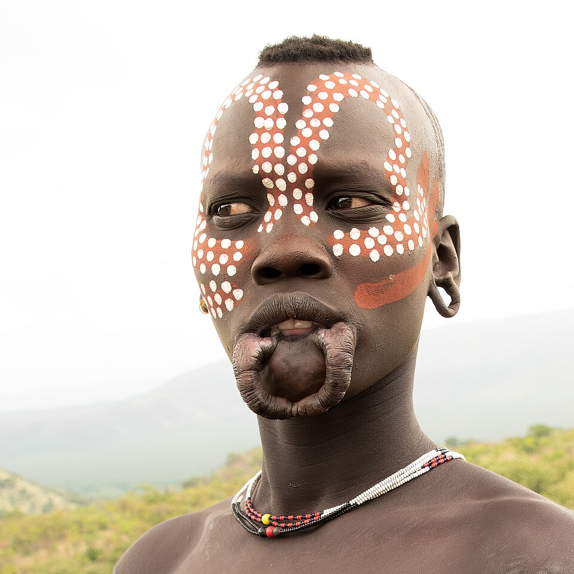
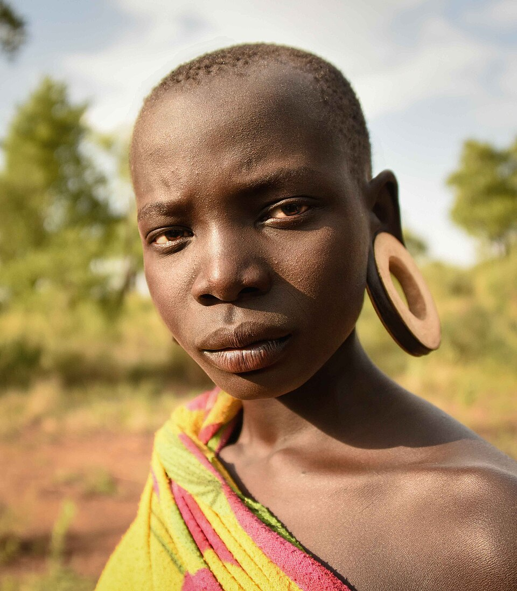
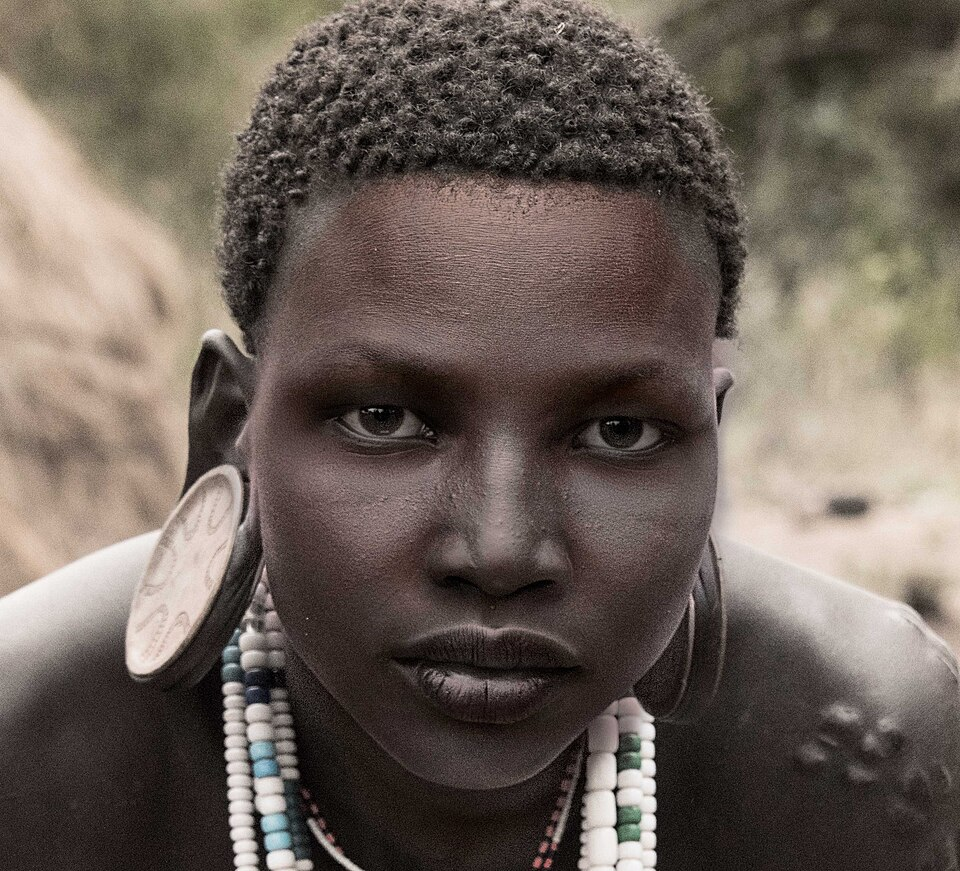
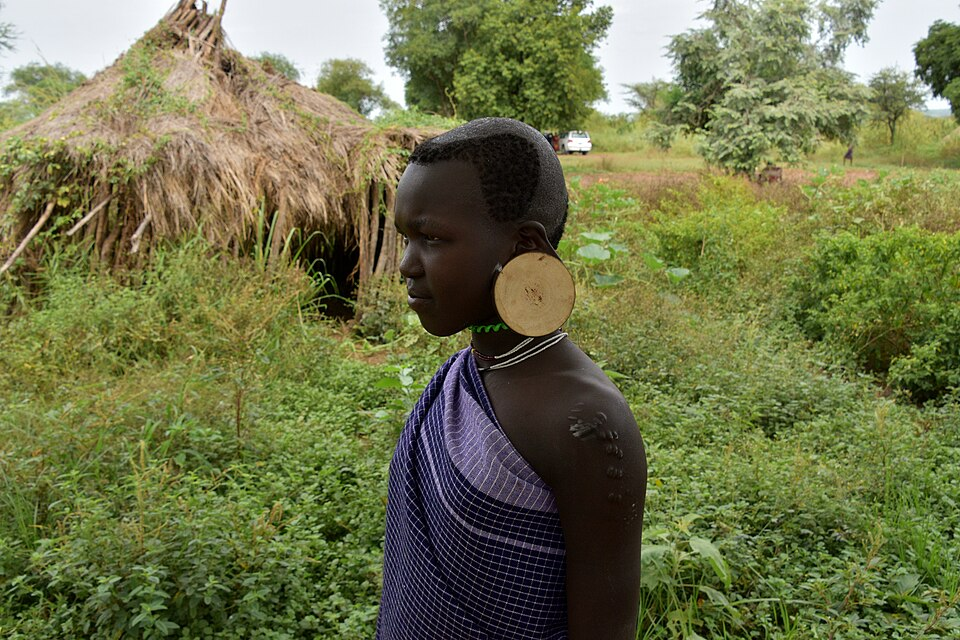
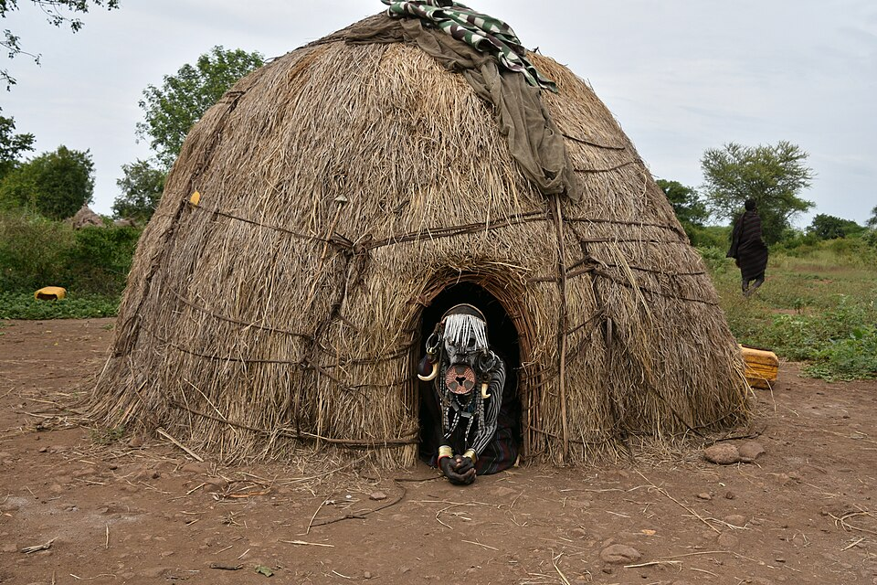
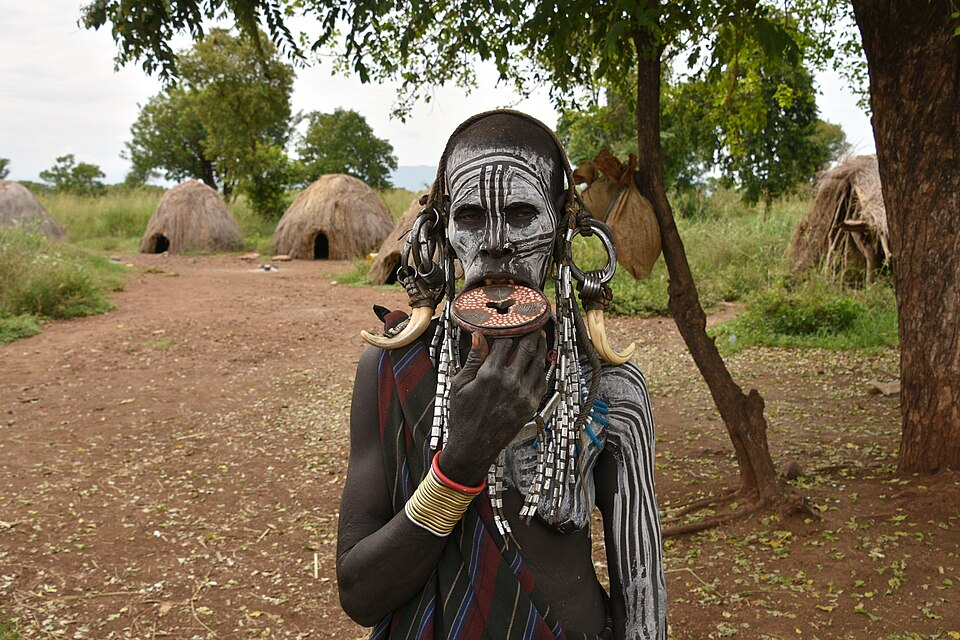
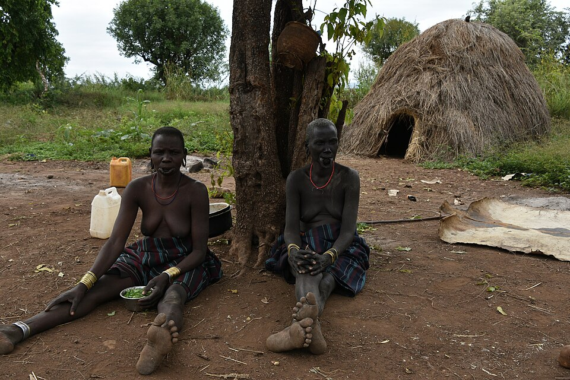
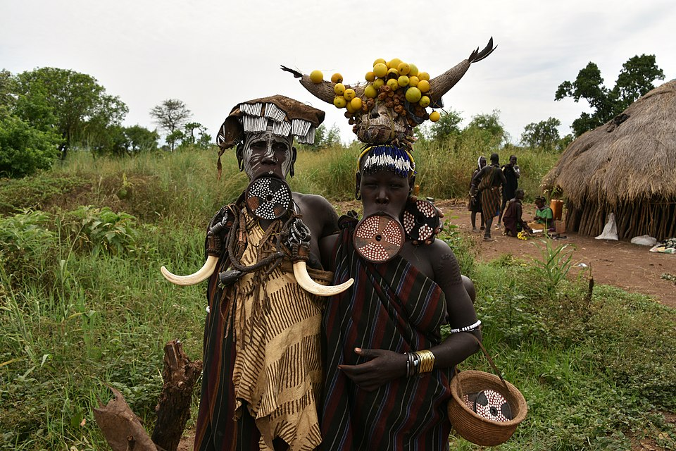

In the dusty savannas of Ethiopia, in the Omo River Valley, lies perhaps the most recognizable yet aggressive tribe in Africa—the Mursi. Known worldwide for the massive clay plates in the lips of their women, few understand that behind this facade lies a society built on a cult of strength, pain, and masterful weapon handling. The Mursi do not consider themselves part of a modern state; for them, the law is the council of elders, and the only currency that matters is cattle.
The primary symbol of the Mursi is the debi plate. When a girl reaches age 15 or 16, her lower lip is cut, and two front teeth are knocked out so they do not interfere with the plate. Initially, a small wooden plug is inserted, and over time, the diameter increases, reaching an incredible 20–25 centimeters. Why is this necessary? There are three versions: Economic (the larger the plate, the more cattle a bride's father can demand), Mystical (the plate serves as a magical shield against evil spirits), and Historical (ancestors began disfiguring women specifically to make them unattractive to slave traders).


To prove masculinity and earn the right to a bride, young men participate in stick fighting—Donga. This is no sporting match; it is a brutal fray. Men armed with two-meter poles attempt to batter their opponents. Rules are minimal: killing is forbidden (though it happens), but almost everything else is permitted. Fighters sustain severe injuries, losing eyes or teeth, but for the Mursi, pain is nothing. The winner is carried to a group of girls, one of whom may choose him as her husband.
Mursi bodies are living chronicles. Instead of tattoos, they use scarification. The skin is sliced with a blade, and ash or plant sap is rubbed into the wound to trigger inflammation and the formation of a raised scar. For women, patterns on the abdomen and arms are signs of beauty and endurance. For men, these are counters for killed enemies or large predators.
Life is a constant search for water and pastures. Their villages are temporary. A typical Mursi home is a low, dome-shaped hut made of branches, plastered with dung, and covered with dry grass. The entrance is so small that one must crawl in on all fours—this preserves coolness and protects against wild animals. Inside, there is no furniture, only animal skins and a hearth. If a pasture is exhausted, the tribe burns their houses and moves, taking only their cattle and grain.


The Mursi do not till the land in the conventional sense. Their lives revolve around cattle. A cow is killed only for weddings or funerals. Usually, they use a "living ration": making a small incision in a cow's neck, collecting blood in a calabash, mixing it with milk, and drinking it. This provides incredible stamina in the heat. They also grow sorghum and corn to make thick porridge and a soup-like beer.
For the Mursi, the body is a canvas. Since there is almost no clothing, social status and mood are expressed through painting. They use white lime and ochre, creating intricate patterns on the skin. Sometimes these are simple stripes; other times, they are complex ethnic ornaments. White clay also protects the skin from the sun and acts as an antiseptic. A Mursi man will never appear before his tribesmen without his "war paint," even just to fetch water.
The debi disk is not just an ornament; it is a symbol of endurance. The Mursi believe that a woman capable of wearing the heaviest disk possesses a character of steel. The process of stretching the lip lasts for years. The disks themselves are molded from clay and fired over a hearth. When a woman removes the disk, the lip hangs as a long leather cord. For the Mursi, this is a sign of trials passed and faithfulness to traditions.
Wedding rituals are devoid of romance. To earn the right to marry, a young man must prove himself in ritual pole duels. But even after victory, the groom is obliged to pay the bride's family a "dowry"—sometimes 30–40 cows. If a young man has no cows, he is not a man. This creates a rigid hierarchy: elder men with herds have multiple wives, while young warriors must prove their worth through raids and skirmishes.


Mursi children are taught from an early age that the world is hostile. Boys herd livestock from age 5 or 6, armed with long sticks. They learn to fight before they can read. Pain is considered a sign of life; crying is forbidden. If a child is injured, they must silently endure the treatment of the wound with ash. By age 15, a youth undergoes initiation to become a protector of the herd and a full member of the council of men.
There are no kings. Decisions are made by the Jalaba—a council of elders. These are the most experienced men, covered in scars from past victories. Status isn't just about age; it's about being a skilled orator. If you cannot argue your point convincingly, your opinion carries no weight, regardless of how many cows you own. While men guard the herds, women handle the physical survival. A Mursi woman is an architect, cook, and porter. They build the huts and perform the hardest labor—trekking up to 15 kilometers to dry riverbeds to dig for water.
Relations between the sexes are strict accounting. A girl cannot marry whomever she wants; the family and the "dowry" decide everything. A man with enough cattle can have five wives, each living in her own hut with her children. Inheritance goes to the eldest son. If there are no sons, cattle are divided among the deceased’s brothers. A woman then passes under the "guardianship" of her husband's relatives to ensure survival.
They use antiseptic twigs for toothbrushes. Wounds are cauterized with hot iron or ash. To ward off parasites, they coat their bodies in a mixture of animal fat and ash—a scent that repels insects better than any modern spray.


The Mursi love music. They use simple flutes and drums. Their songs recount tribal history—droughts, heroes, and the birth of warriors. Their dances look like combat preparation: sharp jumps, stick-fight imitation, and guttural cries. This releases tension and shows off physical fitness.
They believe in a higher power, Tumwi, in the sky, but ancestor spirits are a greater concern. Spirits influence the weather and cattle health. On graves, they leave sacrifices like horns. If cattle die, the spirits are angry, and elders perform rituals to "appease" the heavens. If a warrior is severely ill, he may lie under a tree far from the village so the "evil wind" does not touch the herd. Relatives bring him food and water. If he survives, the spirits have granted him life. If not, the savanna takes its own. This is pure natural selection.
Every cow has a name, and owners remember pedigrees five generations back. Men are often named after their favorite bull. Cattle are their only "bank" for times of drought. Blacksmiths are a respected, feared caste. They forge arrowheads and "brass knuckle" bracelets from salvaged scrap metal like old car springs. These bracelets are used in hand-to-hand combat. Up to age 6, children are raised by the whole community. Any woman must feed any child. But once a boy receives a herding stick, childhood ends. He is beaten for every lost goat to teach absolute responsibility.
During droughts, they eat certain termites and mineral-rich clay from termite mounds. They know this earth contains minerals that save them from exhaustion. The Mursi do not build tombs. When a person dies, they are buried in a fetal position, returned to the earth. Stones and thorns are piled on top to prevent hyenas from digging up the body. Within a year, the burial site may completely vanish from the face of the earth, but the Mursi believe that the spirit of the deceased now lives on in the rustling of the grass or in the behavior of their cattle.